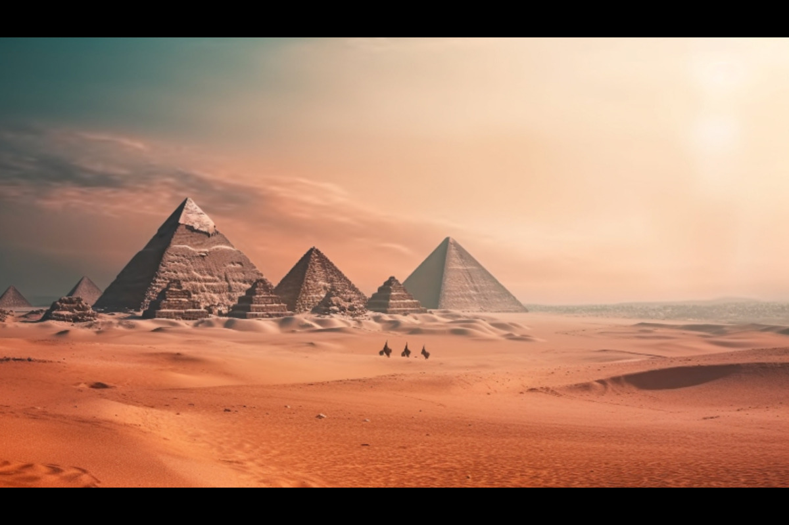
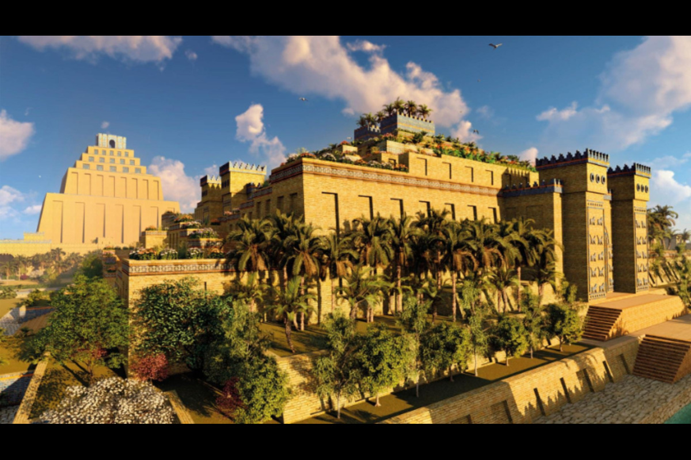
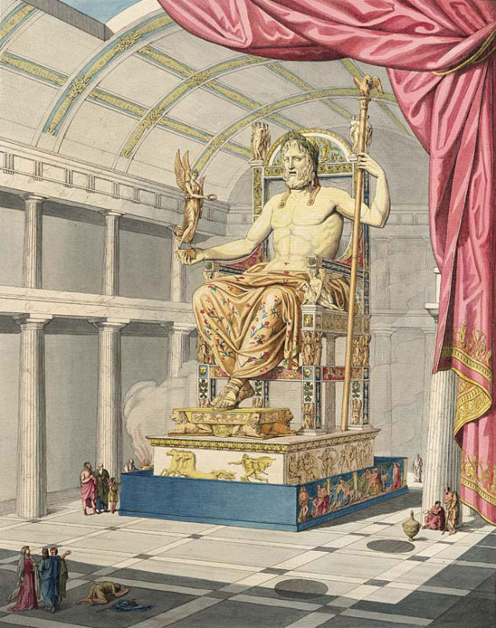
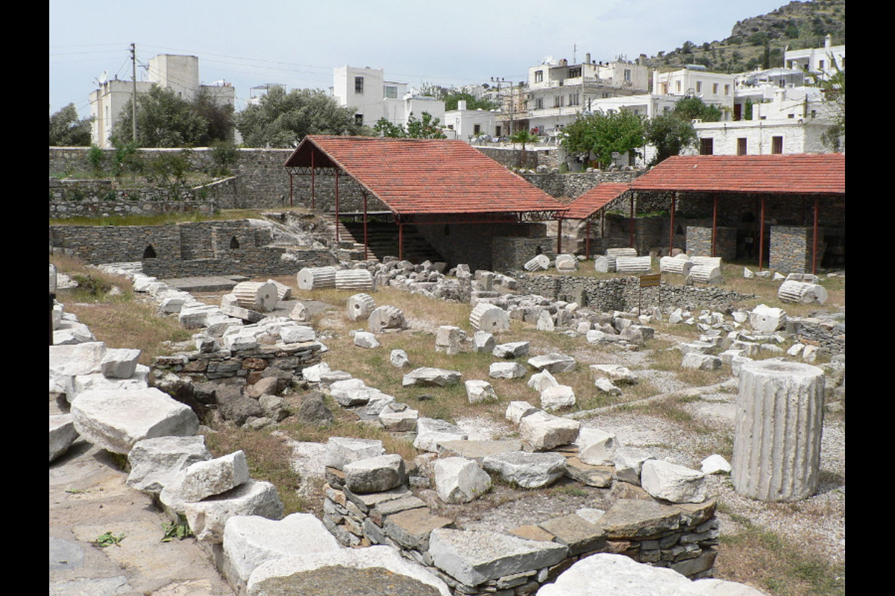
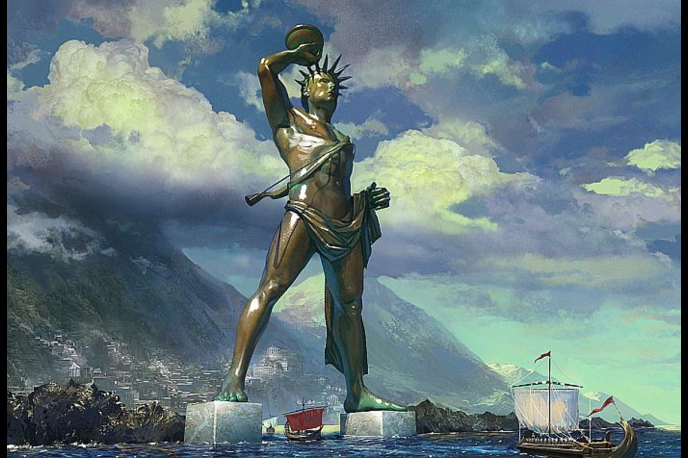
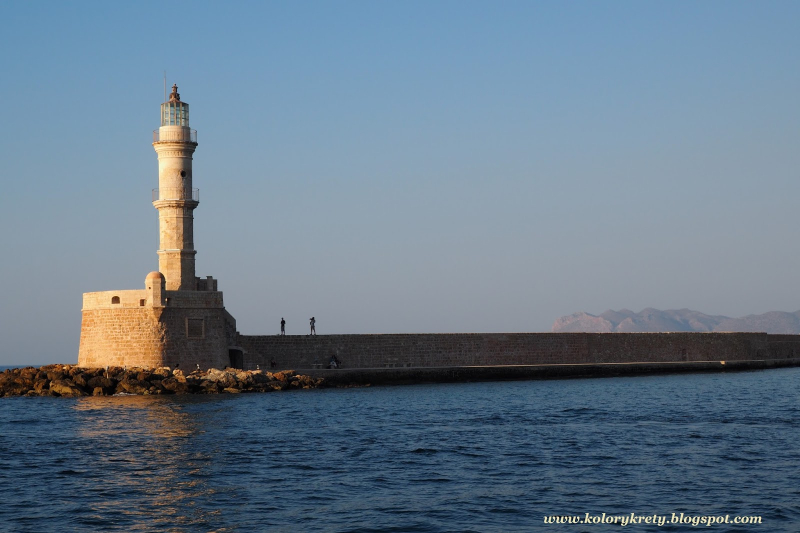

Piramida Cheopsa, zbudowana około 2560 p.n.e., to monumentalna budowla będąca grobowcem faraona Cheopsa. Jest największą z piramid w Gizie i jedynym cudem świata, który przetrwał do dzisiaj.
Ziggurat w Babilonie, zbudowany w VI wieku p.n.e., to ogromna schodkowa wieża świątynna dedykowana bogu Mardukowi. Jego imponująca struktura i kultowe znaczenie czynią go unikatowym w dziejach architektury.
Świątynia Artemidy w Efezie, zbudowana około 550 p.n.e., była jednym z największych budynków sakralnych starożytności. Poświęcona bogini łowów, Artemidzie, przyciągała pielgrzymów z całego świata.
Posąg Zeusa, wzniesiony w IV wieku p.n.e., był majestatycznym wyobrażeniem najwyższego boga greckiego. Znajdował się w świątyni w Olimpii i uchodził za jedno z największych osiągnięć rzeźby starożytnej Grecji.
Mauzoleum w Halikarnasie, zbudowane w IV wieku p.n.e., to monumentalny grobowiec dla Mausolosa, satrapy Persji. Jego piękna architektura i bogate zdobienia uczyniły je jednym z najbardziej znanym mauzoleum starożytnego świata.
Wzniesiony w III wieku p.n.e. na wyspie Rodos, Kolos Rodyjski był potężnym posągiem przedstawiającym boga Heliosa. Jego wysokość przekraczała 30 metrów, czyniąc go jednym z najwyższych posągów starożytności. Zniszczony przez trzęsienie ziemi w 226 p.n.e., pozostawia dziedzictwo umiejętności rzeźbiarskich starożytnych Greków.
Latarnia morska na Faros w Aleksandrii, zbudowana około 280 p.n.e., to jeden z najwcześniejszych przykładów latarni morskich. Jego ogromny płomień przewodnikowy był widoczny z odległości kilkudziesięciu kilometrów.
Jan Szucsich 2ta